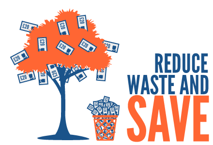
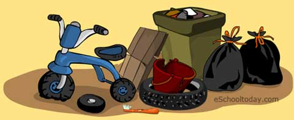

As long as humans live, waste will be created. Waste has been a major environmental issue everywhere since the industrial revolution.
Besides the waste we create at home, school and other public places, there are also those from hospitals, industries, farms and other sources.
Humans rely so much on material things and they all (almost) end up as waste.
And hey — where does the waste end up?

Waste are items we (individuals, offices, schools, industries, hospitals) don’t need and discard. Sometimes there are things
we have that the law requires us to discard because they can be harmful. Waste comes in infinite sizes—some can be as small as an old toothbrush,
or as large as the body of a school bus.

Everyone creates waste, although some people are very environmentally conscious and create very little.
Likewise, some countries do a very good job creating less waste and managing the rest. Others are pretty horrible and have created
huge environmental problems for the people and animals living there.
Did You Know?
Barely 35,600 metric tonnes (MT) or a quarter of the 1.43 lakh MT of garbage generated every day in Indian cities gets processed.
What is the difference between trash and garbage?
Trash: Solid waste form places like your atic, backyard or study. Trash items include paper and card boxes and the like.
Garbage: This is waste from kitchen and bathroom. They also include waste from cooking food and from food storage facilities.
All over the world, communities handle their waste or trash differently. Some common methods of managing their waste include landfilling, recycling
and composting. Other communities strongly embark on waste reduction and litter prevention/control aimed at reducing the production of waste in the
first place. Some communities also engage in waste-to-energy plants and hazardous waste disposal programs.